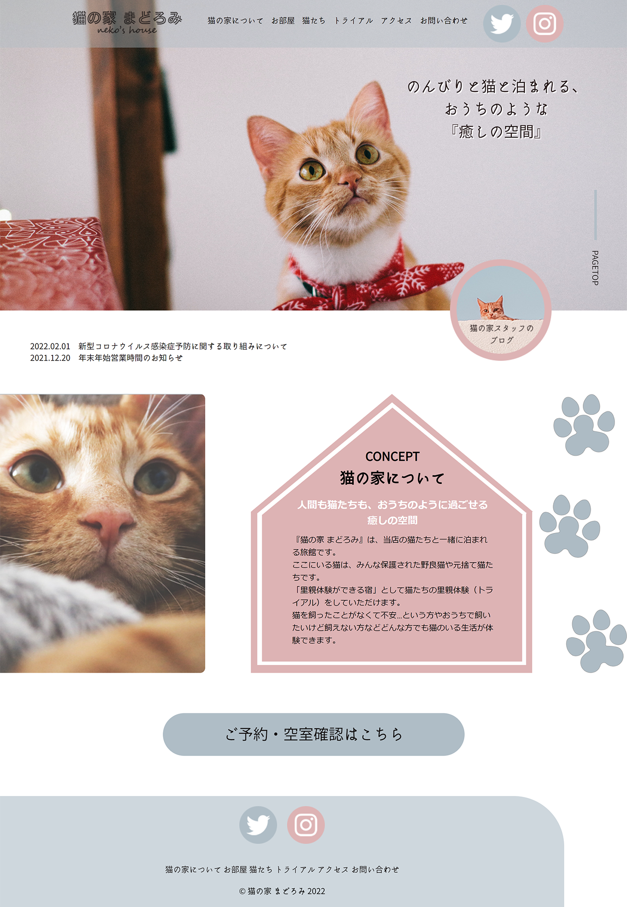

デザイン～コーディングまですべて
『猫と泊まれる旅館』がコンセプトである架空の旅館のWEBサイトを全6ページ分制作しました。
サイトの目的は「利用客の増加」、「運営するSNS・ブログ等のアクセス数の向上」としました。
このWEBサイトを制作しようと思った理由は、以前とある『猫と泊まれる旅館』を実際に利用させていただいたのがきっかけでした。
旅館で飼われている保護猫のトライアル（里親体験）ができるので、猫ちゃんを人慣れさせるトレーニングになり、人間も猫ちゃんと一緒に泊まれて嬉しいという一石二鳥の旅館で、この旅館がもっと世に広まると良いなと思ったため、制作の題材としました。
その旅館のWEBサイトをリニューアルするとしたらと仮定し、改善点などを考えながら制作しました。
くすみカラーのピンクと水色を使用することで、落ち着きのある旅館であることを表現しました。
載せている画像やボタンの角を丸くするなどして、全体的にやわらかい雰囲気になるよう気を付けました。
また、「猫の家」という旅館名に則り、文字枠の形をお家のようにしたり、猫の足跡のイラストなど猫にまつわるものをデザインに取り入れたりしました。
イラストやアイコンの作成はIllustratorを使用しています。
当旅館を知らない人でも、ファーストビューを見ただけで『猫と泊まれる旅館』であるというコンセプトが分かるように意識しながら制作しました。
デザインカンプ作成・ライティング：約12時間
コーディング・レスポンシブ対応：約8時間×7日（計56時間）
修正：約7時間
合計：約65時間
今回は複数ページでの制作なので、全ページのデザインに統一感を持たせるよう気を付けて制作しました。
サブページは、2カラムデザインにして左側に現在のページを示すことで現在地が分かりやすくなるように工夫しました。
ヘッダーにはツイッターやインスタグラムなどのボタンを置くことで、興味を持った人たちが各SNSへすぐに遷移できるようにしました。
SNSがあることで、口コミなどで広がりやすくなるだけでなく、実際に利用したときのイメージがつきやすくなり、安心感を与える効果もあるのではないかと思いました。
さらに、フォローしてもらうことで旅館のファン化にも繋がりやすくなるので、各SNSへの入り口を分かりやすく示すことは重要だと考えました。
また、興味を持ってサイトへ訪れた人を集客へとつなげるよう各ページの下部に「予約・空室確認」ボタンを置いています。
↓サブページのスクリーンショット
あまり２カラムデザインを制作したことがなかったので、実際に作ってみると左の見出しが画面サイズによっては綺麗に表示されないことが分かり、その対応方法を調べるなどしてとても勉強になりました。
まだまだ知らないCSSがあることを実感したので、普段慣れないことも挑戦してみようと思いました。
反省点としては、制作目標に「SNSのアクセス数向上」を掲げていたのでもっとSNSをピックアップしたページを作成しても良かったのではないかと思いました。
例えば、実際に旅館へ泊まった人たちが楽しそうにしている写真を掲載したり、お客様の声といったページで利用客の生の声を載せるなど、活用方法はまだまだあるなと思いました。
また、固定のファンをつける意味でも、もっと猫ちゃんの紹介文や画像・動画などを増やして、お客様自身がお気に入りの猫ちゃんを見つけやすくする工夫なども出来れば良かったなと思いました。
Photoshop、illustrator、Dreamweaver
PC
スマートフォン